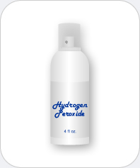

|  |
Hydrogen Peroxide
Chemicals you may find: Hydrogen Peroxide Water |
| Hydrogen peroxide is a clear liquid that has a structure similar to water but is less stable. Hydrogen peroxide is used primarily as a disinfectant and bleaching agent. As a disinfectant, this chemical works to clean wounds by removing dead tissues through its decomposition into water and oxygen. In low concentrations this compound can also be applied to the hair to produce a lighter color. | |